In silico correction of blocked array using RTB and REFoCUS
Creating the simulated results in the paper:
A. E. Vrålstad, S.-E. Måsøy, T. G. Bjåstad, A. R. Sørnes and O. M. H. Rindal, "Retrospective transmit correction of blocked arrays applied to cardiac ultrasound imaging," IEEE Trans. Ultrason., Ferroelect., Freq. Control, short paper (TUSON 2026, to appear).
This script creates Figs. 3-4 in the paper.
This code uses the UltraSound ToolBox (USTB). Clone or add USTB to the MATLAB path before running. See https://github.com/unioslo/USTB and the project website.
Authors: Anders E. Vrålstad, Ole Marius Høel Rindal
Contents
- Clear environment
- Load data
- Run REFoCUS preprocess
- Create Sector scan
- RTB Beamforming
- Store the Original RTB weights for plotting later
- Change beam geometry for RTB processing
- Store the Compensated RTB weights for plotting later
- Demodulate REFoCUS RF-data before DAS
- REFoCUS Beamforming
- Save PNGs
- Save GIF
- Measure contrast (interactive drawrectangle; skipped in headless publish/CI)
- Make Difference Images: of RTBs
- Make Difference Images: RTB comp and REFoCUS
- Make Difference Images: RTB and REFoCUS
Clear environment
clear all; close all; % Headless / publish / CI: no interactive ROI drawing; no demod figure headless = ~usejava('desktop');
Load data
Read the data; download if missing (USTB example datasets on Zenodo)
url = tools.zenodo_dataset_files_base(); local_path = [ustb_path(), '/data/']; addpath(local_path); % Choose dataset %filename='speckle_sim_FI_P4_probe_apod_1_speckle_long_many_angles.uff'; tag = 'full'; %filename='speckle_sim_FI_P4_probe_apod_2_speckle_long_many_angles.uff'; tag = 'third'; filename='speckle_sim_FI_P4_probe_apod_3_speckle_long_many_angles.uff'; tag = 'half'; tools.download(filename, url, data_path); % Check if the file is available in the local path or downloads otherwise channel_data = uff.read_object([data_path, filesep, filename],'/channel_data'); channel_data.data = channel_data.data./max(channel_data.data(:)); storefolder = ['./Figures/simulated_gCNR_',tag, '/']; mkdir(storefolder);
UFF: reading channel_data [uff.channel_data] UFF: reading sequence [uff.wave] [====================] 100%
Run REFoCUS preprocess
tic REFoCUS = preprocess.refocus(); REFoCUS.input = channel_data; REFoCUS.use_filter = 0; REFoCUS.filter_N = 10; REFoCUS.filter_Wn = [0.05,0.4]; REFoCUS.regularization = @Hinv_tikhonov; REFoCUS.decode_parameter = 0.01; REFoCUS.post_pad_samples = 0; channel_data_REFoCUS = REFoCUS.go(); toc()
This is citationware. If you use REFoCUS in your publication, please cite Ali, R., Herickhoff, C. D., Hyun, D., Dahl, J. J., & Bottenus, N. (2020). Extending RetrospectiveEncoding for Robust Recovery of the Multistatic Data Set. IEEE Transactions on Ultrasonics,Ferroelectrics, and Frequency Control, 67(5), 943–956. https://doi.org/10.1109/TUFFC.2019.2961875Original REFoCUS code from www.github.com/nbottenus/REFoCUS Starting to REFoCUS channel data...Completed in 18.2464 seconds. Elapsed time is 18.294260 seconds.
Create Sector scan
depth_axis=linspace(0e-3,110e-3,512).'; azimuth_axis=zeros(channel_data.N_waves,1); for n=1:channel_data.N_waves azimuth_axis(n) = channel_data.sequence(n).source.azimuth; end scan=uff.sector_scan('azimuth_axis',azimuth_axis,'depth_axis',depth_axis);
RTB Beamforming
Calculate F-number
Fnumber = channel_data.sequence(1).source.distance/(max(channel_data.probe.x)*2); mid=midprocess.das(); mid.channel_data=channel_data; mid.dimension = dimension.both(); mid.scan=scan; if isempty(which('das_c')) mid.code = code.matlab; else mid.code = code.mex; end mid.receive_apodization.window=uff.window.boxcar; mid.receive_apodization.f_number=1.7; mid.transmit_apodization.window=uff.window.hamming; mid.transmit_apodization.f_number=Fnumber; mid.transmit_apodization.minimum_aperture = 3e-3; b_data_RTB = mid.go(); b_data_RTB.frame_rate = 20; b_data_RTB.plot([], 'RTB');
USTB MATLAB beamformer...Completed in 12.79 seconds.
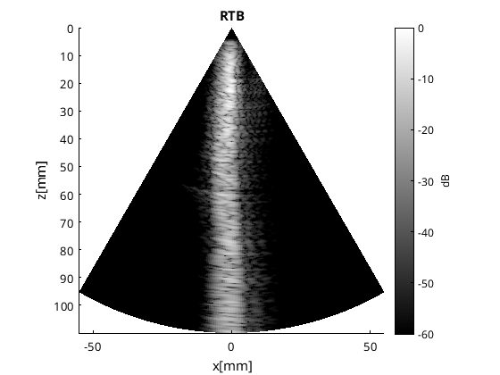
Store the Original RTB weights for plotting later
b_data_tx_apod = uff.beamformed_data(b_data_RTB); b_data_tx_apod.data = mid.transmit_apodization.data; b_data_tx_apod.plot([],['Tx Weights no shift'],[],'none'); colormap default;
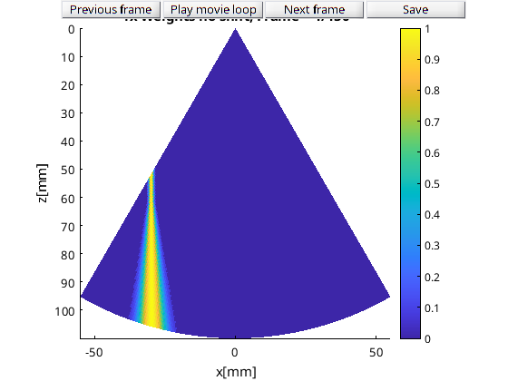
Change beam geometry for RTB processing
switch tag case 'full' origin_x = 0; case 'third' origin_x = max(channel_data.probe.x)*(2*2/3-1); Fnumber = Fnumber*3/2; case 'half' origin_x = max(channel_data.probe.x)*0.5; Fnumber = Fnumber*2; end channel_data_shifted = uff.channel_data(channel_data); for seq = 1:channel_data_shifted.N_waves channel_data_shifted.sequence(seq).origin.x = origin_x; end mid.channel_data = channel_data_shifted; mid.transmit_apodization.f_number=Fnumber; b_data_RTB_comp = mid.go(); b_data_RTB_comp.frame_rate = 20; b_data_RTB_comp.plot([],'Proposed RTB');
USTB MATLAB beamformer...Completed in 12.25 seconds.
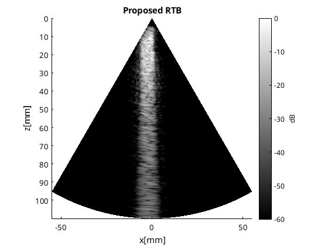
Store the Compensated RTB weights for plotting later
b_data_tx_apod = uff.beamformed_data(b_data_RTB_comp); b_data_tx_apod.data = mid.transmit_apodization.data; b_data_tx_apod.plot([],['Tx Weights with shift'],[],'none'); colormap default;
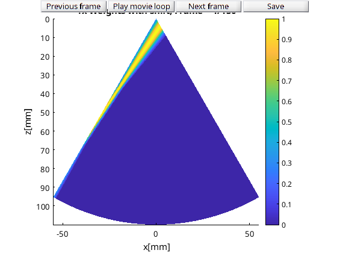
Demodulate REFoCUS RF-data before DAS
demod = preprocess.fast_demodulation(); demod.modulation_frequency = 2.5*10^6; demod.input = channel_data_REFoCUS; demod.plot_on = ~headless; channel_data_STAI_demod = demod.go();
Warning: The downsampling frequency is not specified. Using 2 * modulation_frequency. Low-pass filtering
REFoCUS Beamforming
mid_REFoCUS = midprocess.das(); mid_REFoCUS.channel_data=channel_data_STAI_demod; mid_REFoCUS.dimension = dimension.receive(); mid_REFoCUS.scan=scan; if isempty(which('das_c')) mid_REFoCUS.code = code.matlab; else mid_REFoCUS.code = code.mex; end mid_REFoCUS.transmit_apodization.window=uff.window.boxcar; mid_REFoCUS.receive_apodization.f_number=1.7; mid_REFoCUS.receive_apodization.window=uff.window.boxcar; mid_REFoCUS.transmit_apodization.f_number=1; b_data_delayed_REFoCUS = mid_REFoCUS.go(); b_data_delayed_REFoCUS.plot([],'REFoCUS'); cc = postprocess.coherent_compounding; cc.input = b_data_delayed_REFoCUS; b_data_REFoCUS = cc.go(); b_data_REFoCUS.plot();
USTB MATLAB beamformer...Completed in 15.89 seconds.
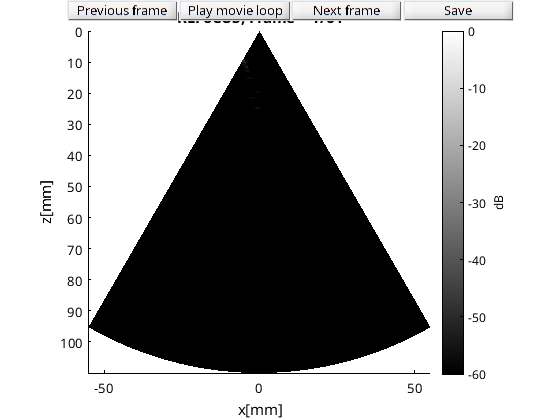
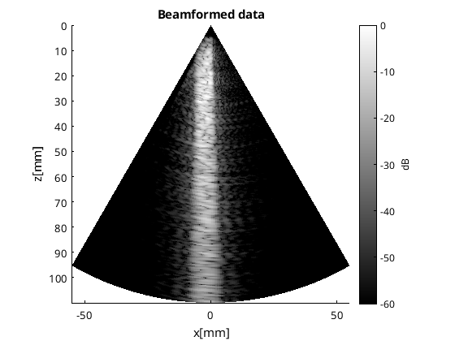
Save PNGs
f = figure; b_data_RTB.plot(f,'RTB'); rectangle(gca,'Position',[-6 5 7 105],'EdgeColor','r','LineWidth',2) clim([-60 0]);xlim([-20 20]); savefig(f,[storefolder,'RTB_', tag,'.fig']); saveas(f,[storefolder,'RTB_', tag,'.png']); b_data_RTB_comp.plot(f,'RTB Compensated'); rectangle(gca,'Position',[-6 5 7 105],'EdgeColor','r','LineWidth',2) clim([-60 0]);xlim([-20 20]); savefig(f,[storefolder,'RTB_compensated_', tag,'.fig']); saveas(f,[storefolder,'RTB_compensated_', tag,'.png']); b_data_REFoCUS.plot(f,'REFoCUS'); rectangle(gca,'Position',[-6 5 7 105],'EdgeColor','r','LineWidth',2) clim([-60 0]);xlim([-20 20]) savefig(f,[storefolder,'REFoCUS_', tag,'.fig']); saveas(f,[storefolder,'REFoCUS_', tag,'.png']);
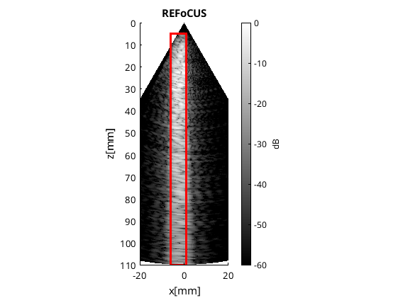
Save GIF
b_data_compare = uff.beamformed_data(b_data_RTB); b_data_compare.data(:,1,1,1) = b_data_RTB.data./max(b_data_RTB.data(:)); b_data_compare.data(:,1,1,2) = b_data_RTB_comp.data./max(b_data_RTB_comp.data(:)); b_data_compare.data(:,1,1,3) = b_data_REFoCUS.data./max(b_data_REFoCUS.data(:))/3; all_images = squeeze(b_data_compare.get_image()); b_data_compare.data(:,1,1,2) = b_data_compare.data(:,1,1,2) .* median(all_images(:,:,1)./all_images(:,:,2),'all','omitnan'); b_data_compare.data(:,1,1,3) = b_data_compare.data(:,1,1,3) .* median(all_images(:,:,1)./all_images(:,:,3),'all','omitnan'); b_data_compare.frame_rate = 1; b_data_compare.plot([]); %title('1:RTB,2:Comp,3:REFoCUS') rectangle(gca,'Position',[-6 5 7 105],'EdgeColor','r','LineWidth',2) clim([-60 0]);xlim([-20 20]); b_data_compare.frame_rate = 1; b_data_compare.save_as_gif(['Figures/Comparison_',tag,'.gif']);
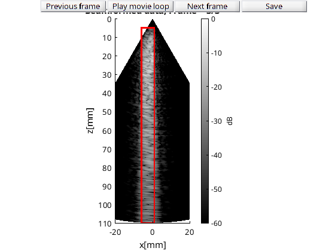
Measure contrast (interactive drawrectangle; skipped in headless publish/CI)
if ~headless [RTB_sc, Xs,Zs] = tools.scan_convert(b_data_RTB.get_image(),b_data_compare.scan.azimuth_axis,b_data_compare.scan.depth_axis, 1024,1024); [RTB_comp_sc, Xs,Zs] = tools.scan_convert(b_data_RTB_comp.get_image(),b_data_compare.scan.azimuth_axis,b_data_compare.scan.depth_axis, 1024,1024); [REFoCUS_sc, Xs,Zs] = tools.scan_convert(b_data_REFoCUS.get_image()-12,b_data_compare.scan.azimuth_axis,b_data_compare.scan.depth_axis, 1024,1024); img_cell = {RTB_sc,RTB_comp_sc,REFoCUS_sc}; name_cell = {'RTB','RTB Compensated', 'REFoCUS'}; das_handle = figure(); imagesc(Xs,Zs,img_cell{3}); center_rectangle = [-0.006,0.07,0.007,0.04]; v1_area =drawrectangle('Position',center_rectangle-[0.008,0,0,0]); v2_area =drawrectangle('Position',center_rectangle+[0.008,0,0,0]); c_area =drawrectangle('Position',center_rectangle); [GCNR, v1_binary, v2_binary, c_binary] = contrast_calc_insilico(img_cell,name_cell, Xs, Zs, das_handle, 60,storefolder,c_area,v1_area,v2_area); else fprintf('[Correction_of_simulated_blockage] Skipping interactive gCNR (headless run).\n'); end
[Correction_of_simulated_blockage] Skipping interactive gCNR (headless run).
Make Difference Images: of RTBs
all_images = b_data_compare.get_image(); diff = all_images(:,:,2)-all_images(:,:,1)-1.6; [diff_sc, Xs,Zs] = tools.scan_convert(diff, scan.azimuth_axis, scan.depth_axis,1024,1024); f =figure; imagesc(Xs*1e3,Zs*1e3,diff_sc,[-30,30]);colormap(bluewhitered);colorbar xlabel('x[mm]') ylabel('z[mm]') axis image xlim([-20,20]); ylim([60,110]); set(findall(gcf,'-property','FontSize'),'FontSize',15) savefig(f,[storefolder,'RTBminusRTBcomp_',tag,'.fig']); saveas(f,[storefolder,'RTBminusRTBcomp_',tag,'.png']);
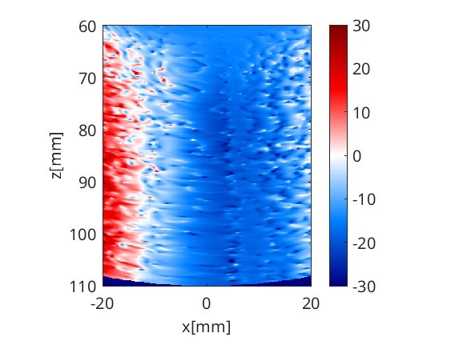
Make Difference Images: RTB comp and REFoCUS
all_images = b_data_compare.get_image(); diff = all_images(:,:,3)-all_images(:,:,2)-7; [diff_sc, Xs,Zs] = tools.scan_convert(diff, scan.azimuth_axis, scan.depth_axis,1024,1024); f = figure(); imagesc(Xs*1e3,Zs*1e3,diff_sc,[-30,30]);colormap(bluewhitered);colorbar xlabel('x[mm]') ylabel('z[mm]') axis image xlim([-20,20]); ylim([60,110]); set(findall(gcf,'-property','FontSize'),'FontSize',15) savefig(f,[storefolder,'REFoCUSminusRTBcomp_',tag,'.fig']); saveas(f,[storefolder,'REFoCUSminusRTBcomp_',tag,'.png']);
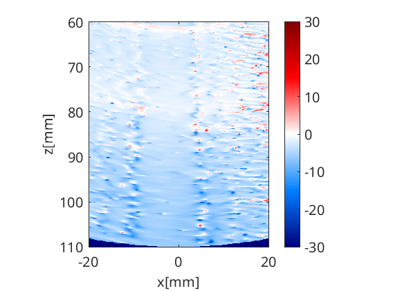
Make Difference Images: RTB and REFoCUS
all_images = b_data_compare.get_image(); diff = all_images(:,:,3)-all_images(:,:,1)-7; [diff_sc, Xs,Zs] = tools.scan_convert(diff, scan.azimuth_axis, scan.depth_axis,1024,1024); f = figure(); imagesc(Xs*1e3,Zs*1e3,diff_sc,[-30,30]);colormap(bluewhitered);colorbar xlabel('x[mm]') ylabel('z[mm]') axis image xlim([-20,20]); ylim([60,110]); set(findall(gcf,'-property','FontSize'),'FontSize',15) savefig(f,[storefolder,'REFoCUSminusRTB_',tag,'.fig']); saveas(f,[storefolder,'REFoCUSminusRTB_',tag,'.png']);
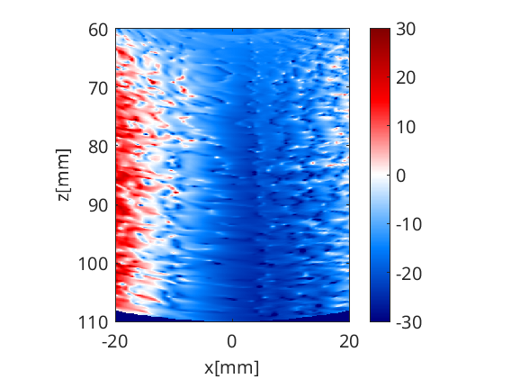